Christian Daniel Morán Titla
Investigo poblaciones y comunidades biológicas desde la ecología, la biogeografía y la bioacústica, aplicando machine learning, IA, modelado matemático y estadística. Lidero proyectos de analítica avanzada, modelos de ML, desarrollo DevOps y agentes de IA.
Sobre mí
Perfil multidisciplinario que combina ciencias biológicas, métodos cuantitativos y desarrollo de software. Más de una década aplicando estadística e investigación a problemas de ciencias biológicas, sociales, exactas y finanzas corporativas.
Idiomas
Intereses
Experiencia
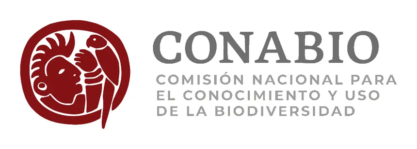
- Plataforma interactiva de paisaje sonoro que permite identificar hallazgos de distintas regiones de México (proyecto CoSMoS).
- Índices de paisaje sonoro como equivalencia de integridad ecosistémica desde la dimensión acústica.
- Storytelling de historias de usuario que cruza la frontera entre lo teórico y lo didáctico para distintos perfiles.
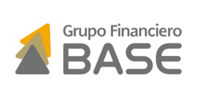
- Retención y ofertas de spread (IA): red neuronal profunda que predice fuga de clientes FX sobre modelos BTYD; modelación matemática para maximizar el spread sin comprometer la relación contractual.
- BI de fondeo de tesorería: dashboards en Tableau y Power BI de operaciones de divisas con contrapartes.
- ETL de utilidades: vista materializada transaccional; extracción, limpieza, transformación, cruce, validación e ingesta.
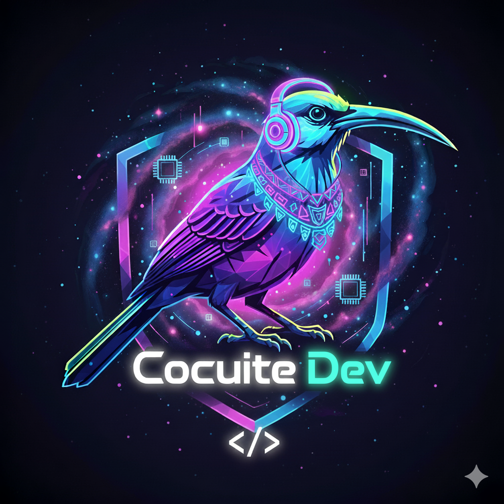
- DevOps de flujos de desarrollo: implementación (API/preprocesamiento, EDA/MLOps), despliegue (CI-CD) y monitoreo (ETL/BI) en producción.
- App web de IA para identificación de especies de aves por canto.
- App web de atención a cliente y POS de restaurante; agente de IA para clasificación de artículos y metaanálisis automático.

- Gestión de proyectos de bioacústica in situ (objetivos, hipótesis, preguntas y diseño de muestreo) para Ecología General y Métodos de Investigación.
- Toma de datos con dispositivos acústicos, preprocesamiento, análisis estadístico e interpretación de resultados.
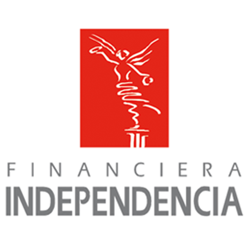
- DevOps y gestión de modelos de IA: blindaje financiero con modelos de identidad, contactabilidad y fraude para mejorar ventas y cobro de créditos.
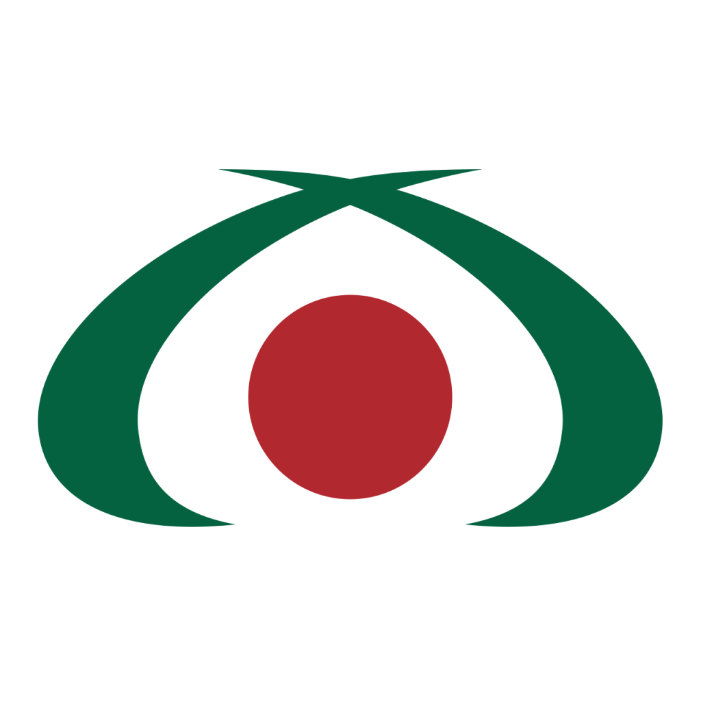
- Pronósticos de fondeo de remesas, análisis de KPI's, segmentación de clientes y modelos BTYD.
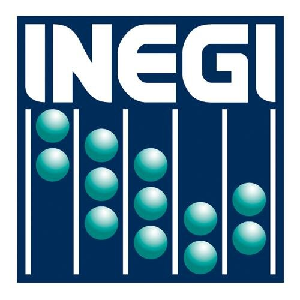
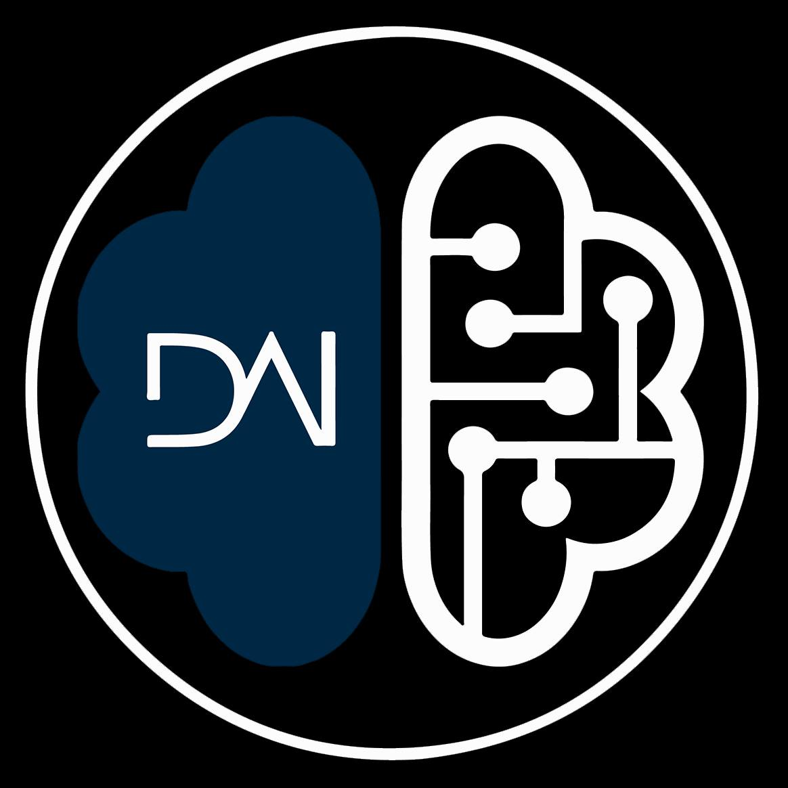
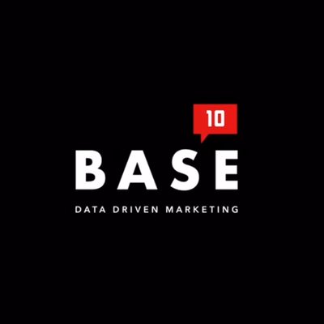
- INEGI (2022): Enlace de vinculación estadística "C" — geoestadística, ML y análisis de texto.
- DAI (2019): analista estadístico — docencia, investigación y consultoría.
- Latreach (2017): data scientist — inteligencia de negocios y data marketing.
Especialización
Stack & herramientas
Técnicas ML & IA
DevOps & nube
Software & SIG
Metodología & datos
Programación
Lenguajes
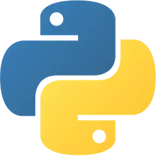
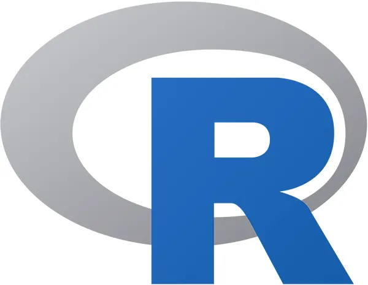
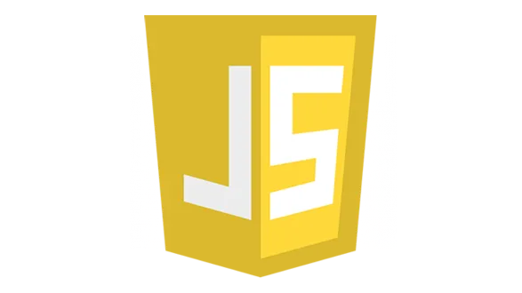
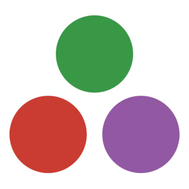
Business Intelligence
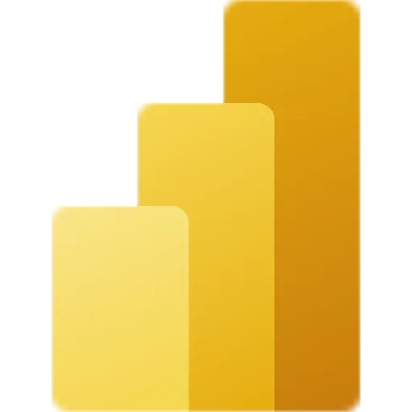
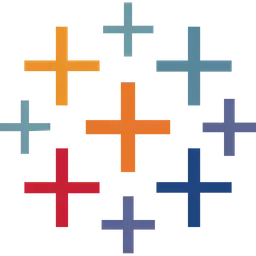
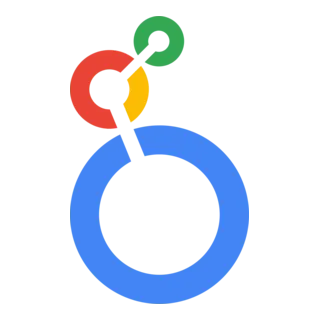
Nube / cómputo
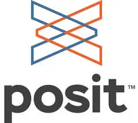
Academia
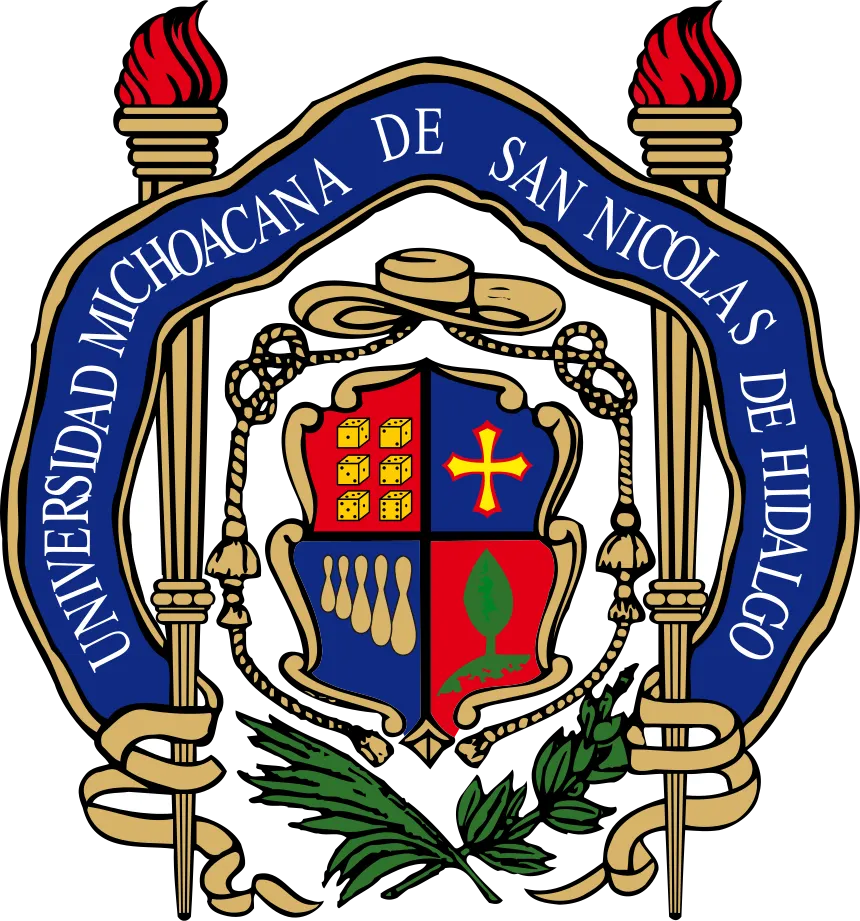
Publicaciones
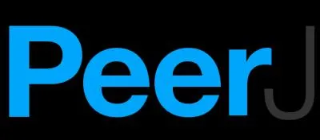
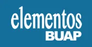
Certificaciones & congresos
Certificaciones
- 2025Diplomado en Inteligencia Artificial Aplicada
- 2024Google: IA y productividad
- 2024Negociación
- 2022Scrum Fundamentals Certified
- 2018Diplomado en sistemas dinámicos
Ponencias en congresos
- 2021Competencia por el nicho acústico y estructura filogenética de comunidades de aves — XVIII Congreso para el Estudio y Conservación de las Aves en México
- 2018Comunidad acústica de la ornitofauna en una zona semiárida (Reserva Tehuacán–Cuicatlán) — II Congreso Internacional de ANP
- 2017Relación espacial del canto de Toxostoma curvirostre — XV Congreso para el Estudio y Conservación de las Aves en México
Talleres impartidos
- 2019Análisis bioestadístico con R (enfoque biomédico), 60 h — Facultad de Medicina, BUAP
- 2018Diplomado de estadística con R, Módulo III: análisis multivariado — Ciencias Biológicas, BUAP
Educación continua (selección)
- 2025Bootcamp Ecosistema Llama para desarrollo de IA — INFOTEC
- 2021Geointeligencia computacional · Julia de alto rendimiento (IIMAS, UNAM)
- 2020Modelado de nicho ecológico · Genómica de la conservación (INECOL)